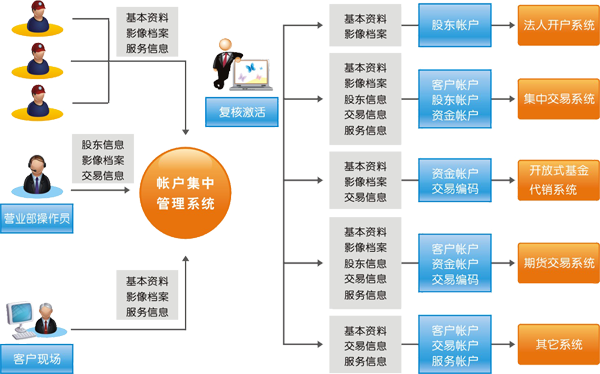

系统概述“统一账户管理系统”实现了客户账户、资金账户、交易产品账户（证券、期货、基金、融资融券等）统一开户、更改、管理；客户资料、影像、电子档案的采集和集中管理工作，实现了中登代理所有账户管理功能，设计了复核和回访保证账户的合规、长效，远程开户更是方便证券公司营销人员上门为客户服务。提高账户管理工作质量，确保做到客户信息真实﹑准确﹑完整；同时，有效整合客户信息，提高柜面人员工作效率。为证券公司提供一套全面的账户、档案、资料管理方案，满足不断发展的多业务需求。系统概述“统一账户管理系统”实现了客户账户、资金账户、交易产品账户（证券、期货、基金、融资融券等）统一开户、更改、管理；客户资料、影像、电子档案的采集和集中管理工作，实现了中登代理所有账户管理功能，设计了复核和回访保证账户的合规、长效，远程开户更是方便证券公司营销人员上门为客户服务。提高账户管理工作质量，确保做到客户信息真实﹑准确﹑完整；同时，有效整合客户信息，提高柜面人员工作效率。为证券公司提供一套全面的账户、档案、资料管理方案，满足不断发展的多业务需求。

版权须知
Copyright © 2010 Hundsun Technologies Inc.
总机：0571-28828888 传真：0571-28823456 邮政编码：310053 浙ICP备09092082号-5